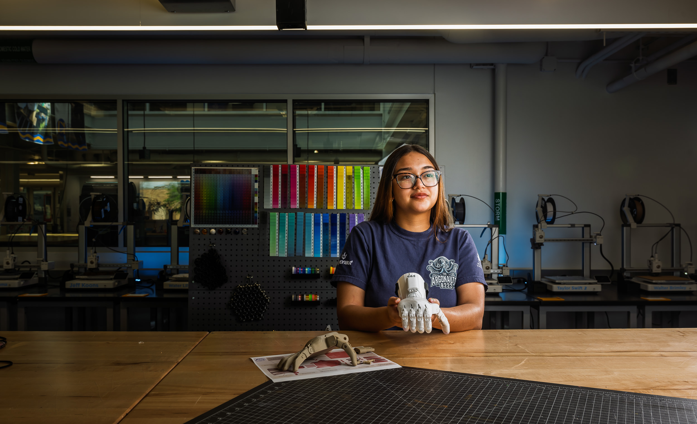
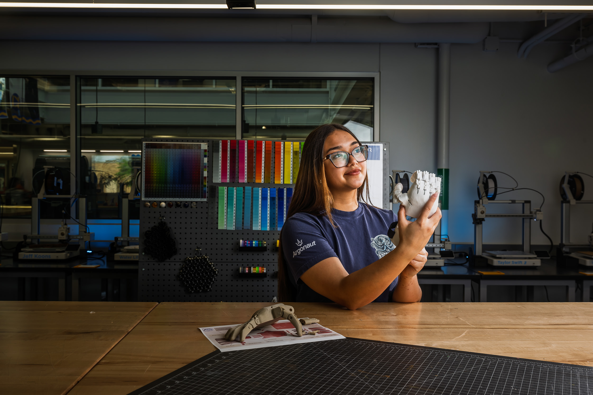
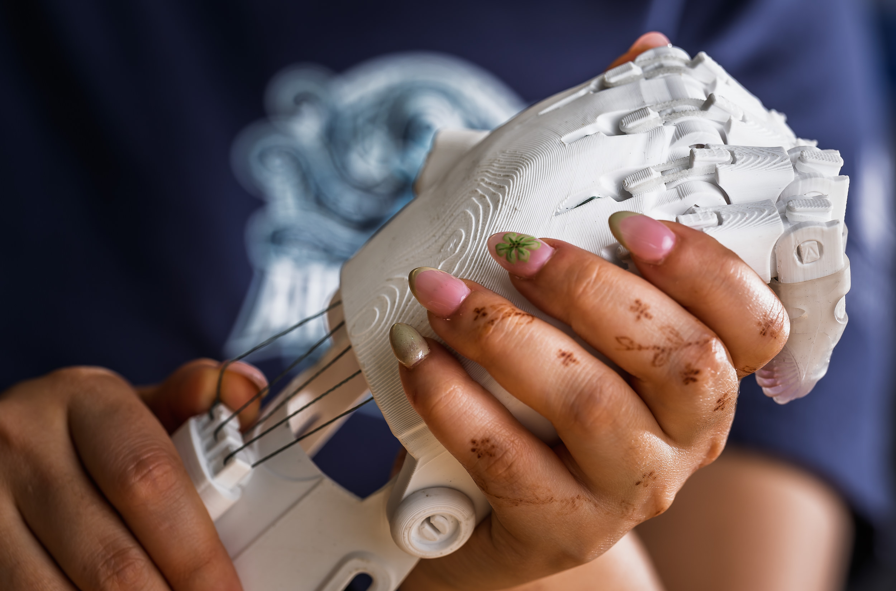

One Flash's mission to change lives, one limb at a time.
On a warm spring evening in her Centennial Court residence hall room, Yariselle Andujar describes the moment everything clicked. She was a high school student in an AVID class in Cleveland when her teacher played a video about college — and something lit up inside her. Not just about higher education, but about what was possible.
That instinct for possibility has defined her life ever since. Now 19 and a freshman in Kent State's College of Aeronautics and Engineering — pursuing industrial engineering technology with plans to transition into mechatronics — Andujar is already a mentor, an innovator and a humanitarian.
She is also one of the founding members of a student-led program that has delivered 3D-printed prosthetic limbs to more than 50 children in Ecuador.

The project started in 2022 at the Great Lakes Science Center in Cleveland, where Andujar and fellow student Daniela Valentina Moreno Machuca were part of a First Robotics team — the Argonauts, Team 8222. Working under robotics leader Timothy Hatfield, the two students noticed something remarkable: the same 3D-printing technology they were using to build affordable robot parts could be used to create prosthetic limbs.
The math was striking. A commercially manufactured prosthetic hand or arm for a child can cost between $5,000 and $10,000 — and children outgrow them. With 3D printing, the same device could be produced for as little as $55 to $60.
"Seeing the small things that they ask for — like being able to eat or wipe themselves — we don't understand how important that is for someone missing that in their life."Yariselle Andujar
What began as a high school robotics idea quickly evolved into a full humanitarian program in partnership with Med Access International. In the summer of 2025, Andujar and five fellow Cleveland Metropolitan School District students traveled to Ecuador for nearly two weeks, fitting 20 children with prosthetic hands and arms at a local hospital — assisting in triage and helping youth shadow physicians during surgeries.
In the summer of 2025, the team traveled to Ibarra, Ecuador for nearly two weeks — fitting 20 children with prosthetic hands and arms at a local hospital, assisting in triage, and helping youth shadow physicians during surgeries.
The group also trained students and teachers at a technical college on 3D printing and met with the Ministry of Health for the Republic of Ecuador to advocate for STEM education.
The team is now at work on a new model for a returning patient named Samantha — a young woman they first served on a previous trip. The newest design features a Japanese-style arm fitted with a custom sleeve socket, refined after the previous model did not perform as expected.



Andujar has since transitioned from student participant to program mentor. She recently helped lead an interview process to select six high school students for the program's upcoming trip to Ibarra, Ecuador, planned for June 22 through July 2, 2026.
As a freshman focused on establishing her academic footing, she has spent this first year getting settled — visiting the university's combat robotics team, working briefly in a campus VR lab. She recently learned for the first time that the College of Aeronautics and Engineering has a design lab equipped with 3D printers that students may be able to access.
When asked what drives her, Andujar pauses. Then speaks with quiet certainty.